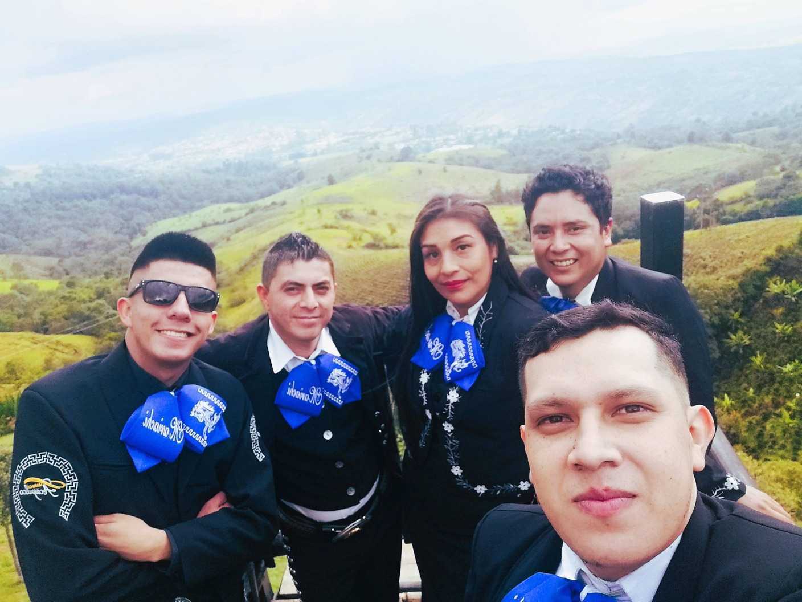
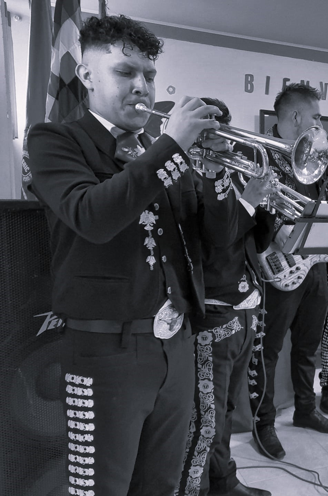

¡Haz de Tu Evento una Celebración Inolvidable!
Nuestros mariachis en Popayán están listos para llenar tu evento de alegría y música. Elige el paquete que mejor se adapte a tus necesidades y disfruta de un espectáculo sin igual.
310 517 43 82Paquete 1

Paquete 2
Paquete 3

Paquete 4

×
 ❮
❯
❮
❯
Gelería de fotos








Repertorio Show Mariachi
- Amor Eterno (Rocío Durcal)
- Ándale (Antonio Aguilar)
- Así Fue (Isabel pantoja)
- Abrázame muy fuerte (Juan Gabriel)
- Bésame Morenita (Pedro Fernández)
- Billete Verde (Los Tigres del Norte)
- Bohemio De Afición (Vicente Fernández)
- Borracho Te Recuerdo (Vicente Fernández)
- Caballo De Patas Blancas (Antonio Aguilar)
- Cascos Ligeros (Alejandro Fernández)
- Como Quien Pierde Una Estrella (Alejandro Fernández)
- Copitas De Mezcal (Antonio Aguilar)
- Cucurrucucu Paloma (Mariachi)
- Cielo Rojo (Flor Silvestre)
- El Aventurero (Antonio Aguilar)
- El Bravero (Antonio Aguilar)
- El Cigarrillo (Ana Gabriel)
- Cataclismo (Mariachi)
- Como Tu Mujer (Rocío Durcal)
- Destino (Rocío Durcal y Juan Gabriel)
- Ay Chabela (Antonio Aguilar)
- Hechizo (Ana Gabriel)
- Costumbres (Rocío Durcal)
- Como La Flor (Selena Quintanilla)
- Échale 5 Al Piano (Antonio Aguilar)
- El Arracadas (Vicente Fernández)
- El Hijo Desobediente (Antonio Aguilar)
- El Hijo Del Pueblo (Vicente Fernández)
- En Tu Pelo (Javier Solís)
- El Amor Más Bonito (Rocío Durcal)